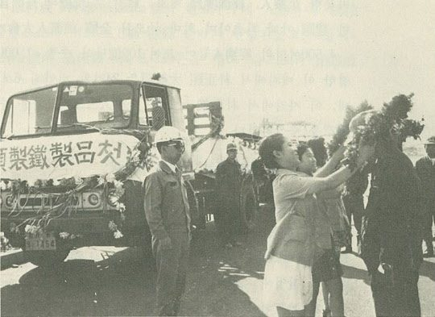
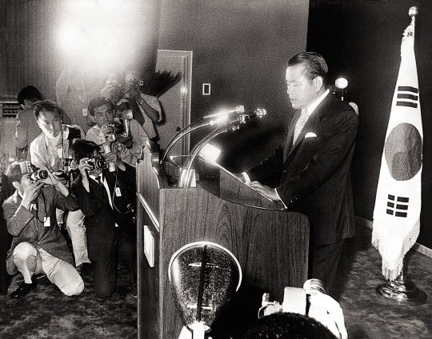
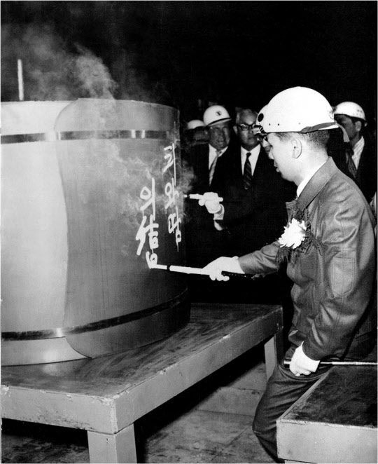
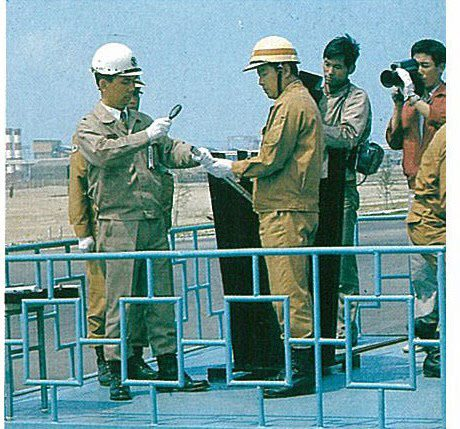

연재일 2015-02-05출처 조선일보 프리미엄조선 연재
영일만 모래벌판에 최초 공장이 완공됐다. 1972년 7월 4일 오전 11시, 포철 1기의 22개 공장 중 제일 먼저 ‘중후판공장 준공식’이 열렸다. 외자 2430만 달러와 내자 24억 원을 투입한 공장 건설에서 ‘공기 1개월 단축’ 목표를 성취했다.
중후판공장은 반제품(슬래브)을 호주나 일본에서 수입해 와서 길이 22미터 조선용, 오일탱크, 고압보일러탱크, 교량, 댐 건설용 등 강판을 연간 33만 6000톤 생산함으로써 400만 달러의 수입대체 효과를 올리게 된다. 후판(厚板) 생산 개시. 박태준은 포스코의 첫 제품에 ‘품질로서 세계정상’이란 기념 휘호를 썼다.
7월 31일 ‘포항제철 제품 첫 출하’라는 플래카드를 붙인 20톤 대형트럭 3대가 사장을 비롯한 임직원의 가슴 벅찬 박수를 받으며 포항제철소 정문을 빠져나갔다. 최초의 반(半)국산 후판 62톤, 목적지는 호남정유 여수공장. 유류저장탱크 제작용으로 팔려나가는 것이다. 아직 고로에서 쇳물이 나오는 것은 아니지만, 그래도 포스코는 감격하지 않을 수 없었다. 박태준도 어린 맏딸을 시집보내는 아버지와 같은 심정이었다.

영일만의 첫 공장 준공식보다 한 시간 빨랐던 7월 4일 오전 10시, 한반도 모든 구성원을 설레게 하는, 조만간 한반도에서 천지개벽을 일으킬 것 같은 엄청난 뉴스가 터졌다. 서울과 평양이 똑같은 시각에 별안간 ‘7‧4남북공동성명’을 발표한 것이다.
그해 5월 대한민국 중앙정보부장 이후락과 조선민주주의인민공화국 제2부장 박성철이 비밀리에 평양과 서울을 오가며 합의했다는 ‘자주‧평화‧민족대단결의 3대 통일원칙’을 비롯해 상호중상‧비방‧무력도발 중지, 다방면에 걸친 교류 실현, 이를 위한 ‘남북조절위원회’ 구성 등 어느 하나도 민족적 염원을 반영하지 않은 것이 없었다. ‘자주’만 들여다봐도 평양의 자주는 ‘반미’가 그 기둥이고 서울의 자주는 ‘반공’이 그 기둥인데, 과연 평양과 서울의 집권자는 어떤 정치적 계산으로 그렇게 대담한 선언을 내놓았을까.

1972년 10월 3일 포스코는 1기 건설의 핵심설비 중 하나인 열연공장 준공테이프를 끊었다. 연간 62만 2000톤의 슬래브를 처리하여 열연코일 18만 3000톤, 박판 22만 톤, 대강 18만 톤 등 58만 3000톤의 완제품을 생산할 공장. ‘후방방식’에서 일관제철소의 하(下)공정 건설을 마무리한 날, 박태준은 첫 열연제품에 ‘피와 땀의 결정체’라는 기념휘호를 쓰며 가슴을 진정시켰다.
피와 땀, 이것은 흔한 수사가 아니었다. 2개월 동안의 철야 돌관작업을 통해 5개월 지연된 공기를 따라잡았던 1971년 가을의 열연비상, 그 고투를 담은 말이었다.

열연공장을 준공했을 때 포철 1기 건설은 종합진도에서 79.2%의 공정률을 기록했다. 그보다 더 벅차고 뿌듯한 일은 구성원들의 정신이었다. 무에서 유를 창조하자는 도전에 성공한 자신감, 민족적 염원을 실현한다는 자긍심, 애국적 의지를 불태우는 사명감. 이 정신적 자산들의 요체라고 할 ‘제철보국’이 포스코 현장에 든든한 기초공사처럼 안착해 있었다.
그즈음 한반도는 정치적 배덕의 길로 빠져들었다. 평양의 김일성이 제5기 최고인민회의를 열어 ‘국가주석 중심제’로 정부조직을 개편하면서 사실상 ‘영구집권체제’를 구축하자, 서울의 박정희가 1972년 10월 17일 ‘10월 유신’을 단행하여 ‘영구집권체제’ 구축에 들어갔다. 7‧4남북공동성명, 그 설레는 화해무대에 졸지에 무서운 한파가 몰아쳤다. 대한민국은 ‘자립경제‧자주국방‧자주통일’과 ‘한국적 민주주의’란 명분으로 ‘겨울공화국’에 진입했다. 머잖아 남북관계도 다시 꽁꽁 얼어붙을 것이었다.
유신 통치체제는 열흘 뒤 등장한 ‘유신헌법’으로 이른바 합법화를 모색했다. 개발독재의 경제성장을 끌어나가는 국가적 동원체제의 심장인 동시에, 억압과 저항의 악순환을 거듭하는 독재통치의 비극적 종말을 잉태한 자궁과 같았던 유신헙법. 개헌반대 발언이 원천적으로 봉쇄된 가운데 11월 21일 국민투표에 부쳐져 ‘투표율 91.9%에 찬성 91.5%’라는 결과를 남겼다. 새 헌법이 규정한 ‘대통령 간접선거’에 의거해, 12월 23일 통일주체국민회의 대의원들이 체육관에서 박정희 후보를 제8대 대통령으로 선출하였다.
스산한 겨울공화국의 1972년 겨울, 그러나 영일만의 겨울은 공기단축의 열정으로 뜨거웠다. 포철 1기 종합준공에 대한 ‘공기 2개월 단축’이란 결전의 목표가 세워져 있었다. 박태준은 1972년 12월 31일 서울 본사를 아예 포항으로 이전했다. 현장제일주의의 실천이었다.
포철 1기 공사의 절정은 ‘고로 화입’과 ‘첫 출선’이었다. 제1고로 화입일(火入日)은 73년 6월 8일로 잡혔다. 아직은 크고 작은 공사가 500여 항목이나 남은 5월 7일, D-32일의 그날, 박태준은 ‘고로 잔공사(殘工事) 비상’을 선포했다. 그것이 위력을 발휘했다. D-1일, 6월 7일. 박태준은 공기단축의 일정표 그대로 본관 앞 광장에서 태양열을 채화할 수 있었다.

6월 8일, 디데이가 밝았다. 7명의 원화 봉송 주자들이 차례차례 하늘의 불씨를 넘겨받았다. 오전 10시 30분, 7번째 주자가 넘겨준 원화봉을 받은 박태준은 엄숙히 기도하는 마음으로 제1고로에 불을 지폈다. 불은 붙었다. 첫 쇳물이 나오려면 그때부터 21시간 동안 기다려야 했다. 그는 고로 앞에 엎드려 절을 올리는 것으로 기다림을 시작했다. 잘생긴 돼지머리가 올라앉은 조촐한 제상 앞에 다른 임원들도 엎드려 절을 올렸다.
박태준은 숙소로 돌아왔으나 좀처럼 잠을 이룰 수 없었다. 잠시도 긴장을 놓지 못했던 숱한 역경이 파노라마처럼 전개되는가 하면, 다음날 아침엔 정말 ‘우향우’를 해야지 않는가 하는 초조감도 떨쳐버릴 수 없었다. ‘고로에서 쇳물이 나오지 않으면 영일만에 빠져죽어야 한다.
전쟁터에서 용케 살아남은 이 한몸 죽는 거야 가족에게 죄스런 일이지만, 조상의 피맺힌 돈을 헛되이 날려버린 민족적 죄업은 누가 짊어져야 하나.’ 이런 생각이 스쳐갈 때마다 고개를 강하게 저으며 다그쳤다. ‘불길한 생각을 버려야 한다. 반드시 된다고 낙관적으로 생각해야 한다.’
1973년 6월 9일 새벽 5시, 일찍 깨어난 박태준이 노심초사하는 시각, 제1고로에선 심각한 실수가 발생했다. 첫 출선을 확실히 하려고 개공기로 출선구를 뚫다가 그만 파이프를 망가뜨린 것이다. 공장장 조용선은 아찔했다. 벽 두께가 2미터나 되는 출선구를 산소불로 직접 뚫는 수밖에 없었다. 잘해보려던 일이 오히려 피 말리는 사투를 초래하고 말았다.
한국의 근대문명이나 근대문화 용어에는 일본식 한자어가 흔하다. ‘미술’만 해도 그렇다. 한국 철강인들은 일본식 한자어 그대로 고로에서 쇳물이 나오는 것을 ‘출선(出銑)’이라 한다. 과연 식민지배상금으로 건설한 포항제철 1고로에서 ‘출선’을 이룰 수 있을 것인가? 영일만 수평선 위로 떠오르는 찰나의 햇덩이 빛깔과 흡사한 그 ‘쇳물’이 제대로 나오기는 나올 것인가?